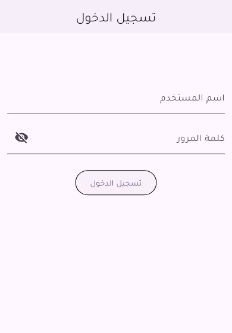
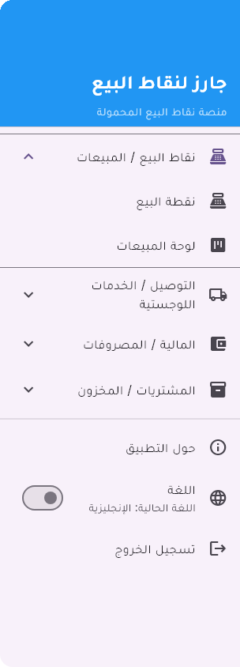

الدخول
تفتح التطبيق، تدخل بحسابك، تختار لغتك، تشغّل تنبيهات الطلبات، وتخرج.
فتح التطبيق
- •على موبايل أو تابلت الفرع: افتح أيقونة Jarz POS.
- •على الكمبيوتر: افتح
erp.orderjarz.com/pos/في كروم. - •تنزيل التطبيق على موبايل جديد: افتح
erp.orderjarz.com/pos/download/ونزّل من هناك. اسأل مديرك الأول قبل ما تنزّله على موبايلك الشخصي.
تسجيل الدخول
- 1
اكتب اسم المستخدم
خانة اسم المستخدم بتاخد الحساب اللي مديرك عمله ليك. غالبًا بيكون إيميل الشغل.
- 2
اكتب كلمة المرور
دوس على علامة العين عشان تتأكد من اللي كتبته قبل ما تبعت.
- 3
دوس تسجيل الدخول
الموظف بينزل على كانبان المبيعات، ومدير الخط بينزل على نقطة البيع. والاتنين يقدروا يتنقلوا بينهم من المنيو.

بتفضل داخل
مش هتسجل دخول كل يوم الصبح. التطبيق فاكرك لحد ما تخرج بنفسك، أو لحد ما تقفل وردية — قفل الوردية بيطلّعك بقصد، عشان اللي بعدك يبدأ بحسابه هو.
تحويل التطبيق للعربي
- 1
افتح المنيو
دوس على علامة ☰ اللي فوق في نقطة البيع أو بورد الطلبات. المنيو مقسومة مجموعات: نقطة البيع/المبيعات، التوصيل/اللوجستيات، المالية/المصروفات، المشتريات/المخزون، وهكذا.
- 2
انزل لتحت خالص
تحت كل مجموعات المنيو هتلاقي مفتاح اللغة ومكتوب عليه اللغة اللي إنت عليها دلوقتي.
- 3
حوّله وأكّد
التطبيق هيسألك "تحويل اللغة إلى العربية؟". أكّد وهيتقلب التطبيق كله، وكمان الاتجاه من اليمين للشمال. مفيش حاجة بتتغير في طلباتك.

تشغيل تنبيهات الطلبات
لما يجيلك طلب أونلاين جديد، التطبيق بيرن ويطلعلك الطلب فوق أي حاجة إنت فيها، وعليه زرار قبول الطلب. أول ما تقبله الطلب بينزل على البورد والتنبيه بيقف.
- •الإعدادات في شاشة الملف الشخصي: افتح بورد الطلبات ودوس على ⋮ (المزيد) اللي فوق → الملف الشخصي. مش موجودة في المنيو الجانبي. هناك بتختار صوت التنبيه وبتشوف الأدوار اللي معاك.
- •على الآيفون بنسخة الويب: ضيف الصفحة للشاشة الرئيسية الأول، افتحها من هناك، وبعدين دوس فعّل الإشعارات في شاشة الملف الشخصي دي. التنبيهات مش هتوصل من تاب سفاري عادي.
- •مدير الخط وفوق بس هم اللي يقدروا يكتموا التنبيه. الموظف يقدر ينزّل صوت الموبايل بس مفتاح الكتم مش بتاعه.
الخروج
المنيو → تسجيل الخروج. اعمل كده قبل ما تدّي الجهاز لحد تاني — كل طلب ووردية وتسوية بتتسجل باسم اللي داخل بحسابه.